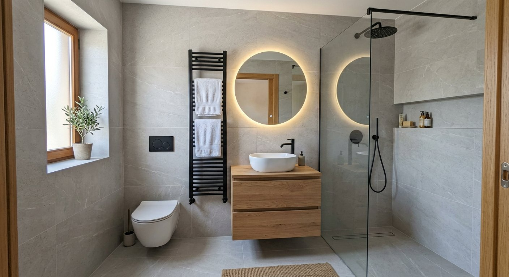

Renovamos tu baño con acabados de calidad, optimizando espacio y confort.
Trabajamos en Arroyomolinos y urbanizaciones cercanas: centro, El Bosque, La Cañada, Los Ángeles, Montecastillo, La Vega y zonas residenciales adyacentes. Estamos familiarizados con los chalets, adosados y pisos de nueva construcción de la zona y sus particularidades constructivas.
En Tadelart Reformas somos un equipo de profesionales de la reforma con amplia trayectoria haciendo reformas de baño en Arroyomolinos. Trabajamos con proveedores de confianza, gremios coordinados desde el primer día y un presupuesto totalmente cerrado antes de empezar, para que no tengas sorpresas.

Diseñamos la distribución que mejor aproveche cada metro: plato de ducha a ras de suelo, bañera exenta, mueble suspendido, inodoro suspendido… según tu espacio y gustos.

Instalamos mamparas a medida, grifería termostática, sanitarios de primeras marcas y mobiliario de baño suspendido o a suelo.

Gran formato, piedra natural, porcelánico, azulejo hidráulico, microcemento… elegimos contigo el material que encaja con tu estilo y presupuesto.

Espejos LED, focos empotrados, radiadores toalleros y sistemas de ventilación para un baño práctico, acogedor y sin humedades.

Quedamos contigo en tu vivienda para tomar medidas exactas, evaluar el estado de las instalaciones y escuchar tus ideas, necesidades y presupuesto orientativo.

Te presentamos una propuesta detallada a medida con plano de distribución, selección de materiales y un presupuesto CERRADO, sin partidas abiertas ni sorpresas.

Coordinamos todos los gremios y ejecutamos la obra siguiendo el calendario acordado. Tendrás un seguimiento continuo del avance sin tener que lidiar con varios intermediarios.

Te entregamos la vivienda limpia, lista para entrar a vivir y con todos los acabados rematados. Todas nuestras reformas tienen garantía para que estés tranquilo.
Quedamos contigo, tomamos medidas y te entregamos un presupuesto cerrado y detallado, adaptado a tus necesidades y sin sorpresas. Responde a todas tus dudas antes de decidir.
El precio depende de las dimensiones, los materiales elegidos y si se necesita modificar instalaciones. Entregamos presupuesto cerrado tras visitar tu vivienda y evaluar el proyecto en detalle.
Cada reforma es distinta; el plazo depende del alcance. Te damos un planning de obra cerrado durante la planificación para que puedas organizarte.
Sí, es una de las reformas más demandadas. Lo hacemos con acabados impermeabilizados al 100% y plato a ras de suelo para máxima accesibilidad.
Inspeccionamos antes de empezar, pero si aparece algún imprevisto te lo comunicamos de inmediato con opciones y presupuesto adicional transparente antes de actuar.